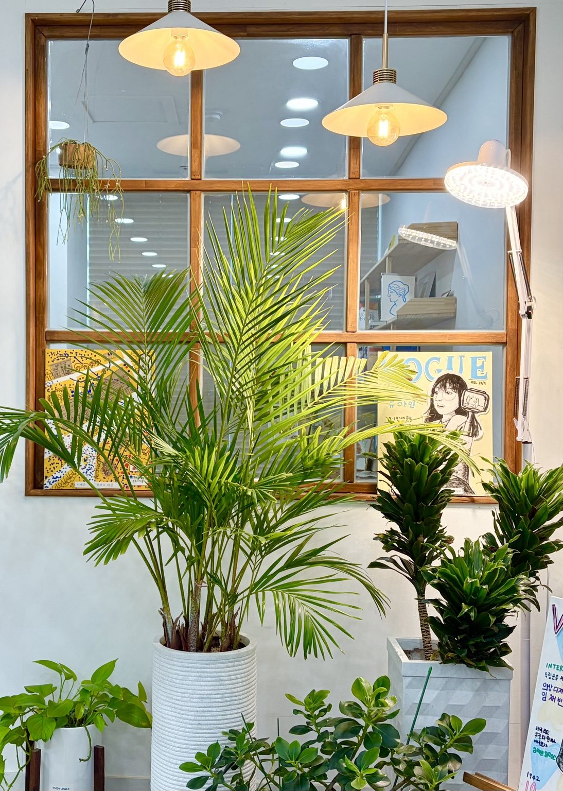
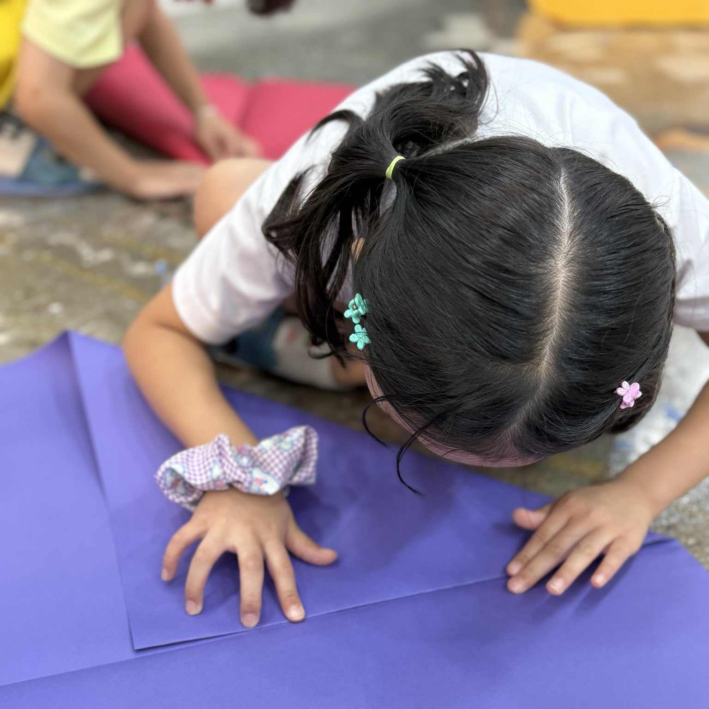
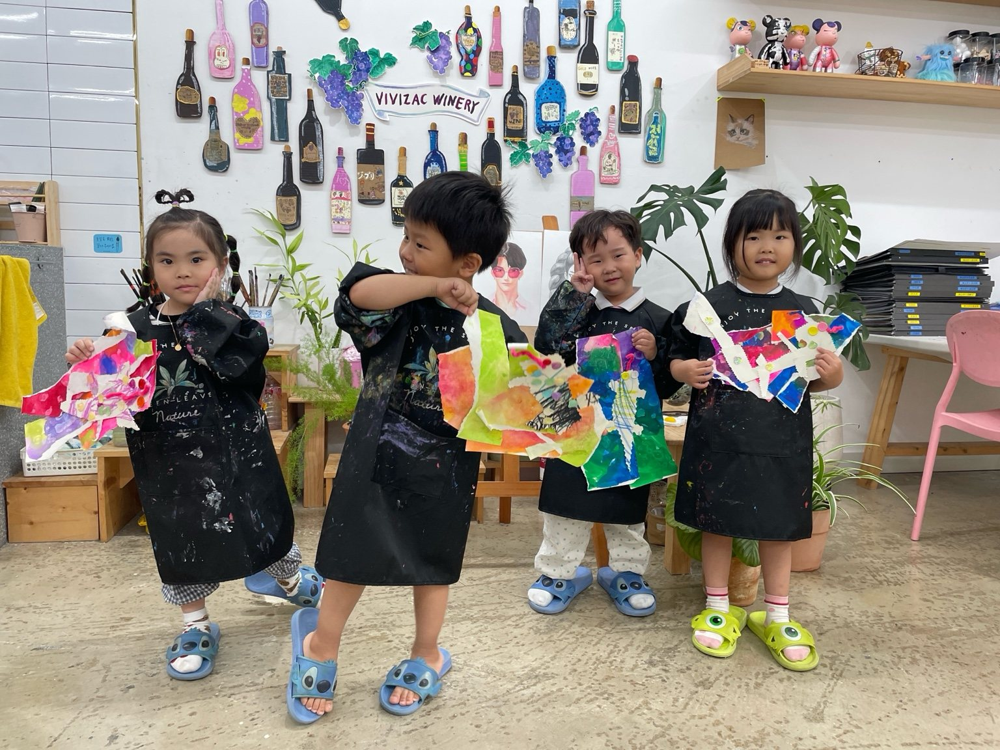
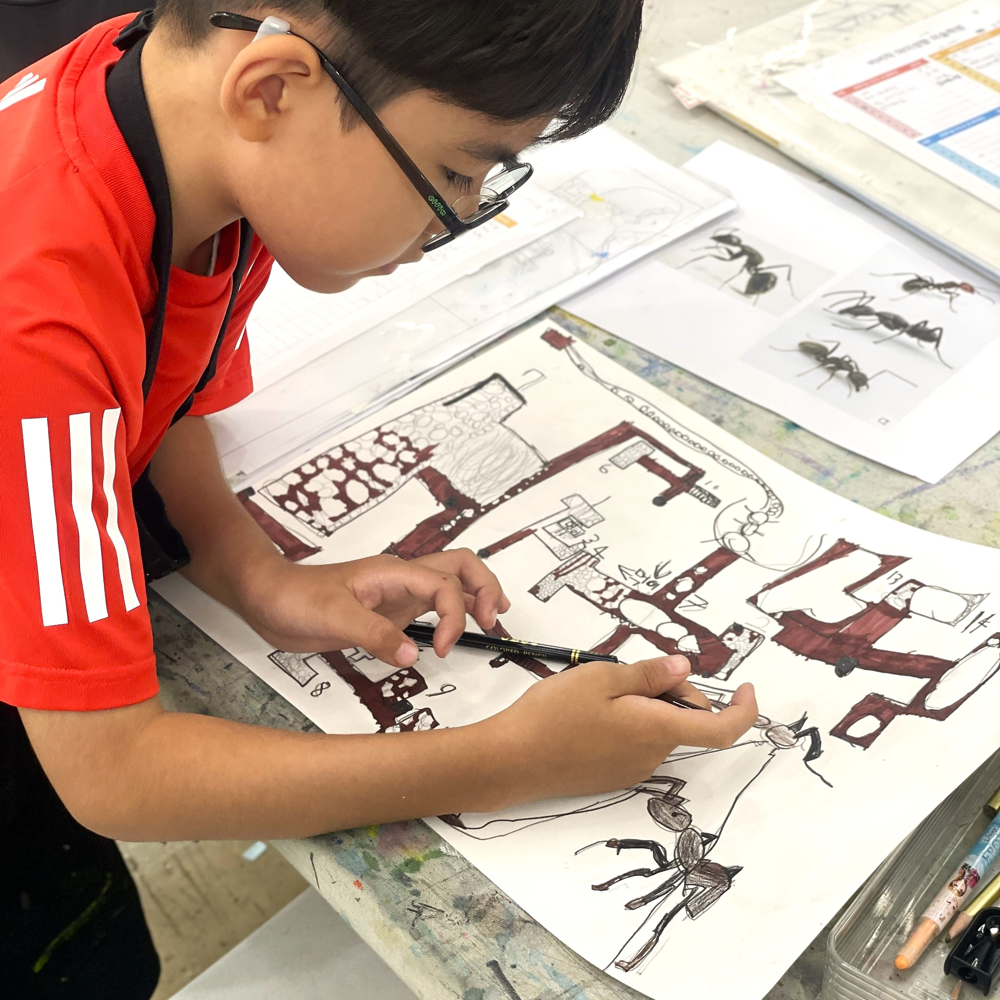
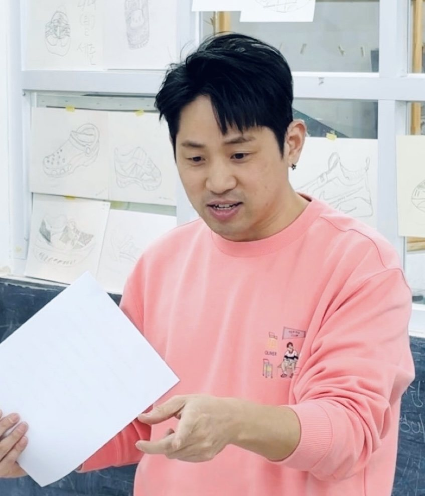
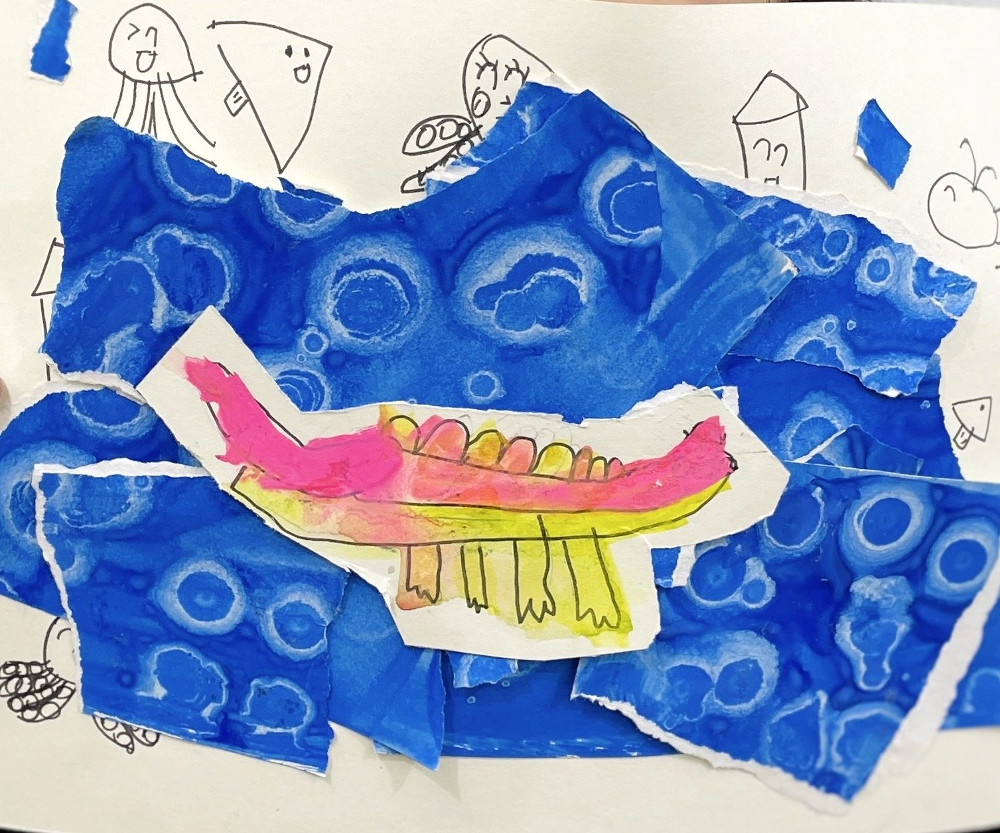
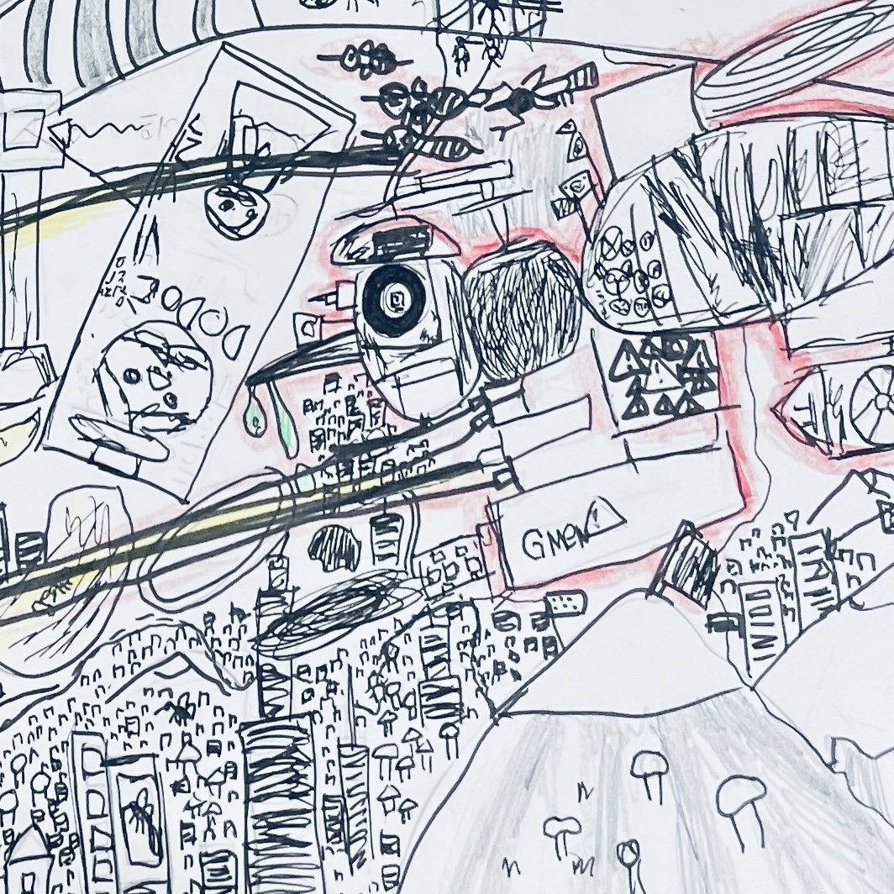
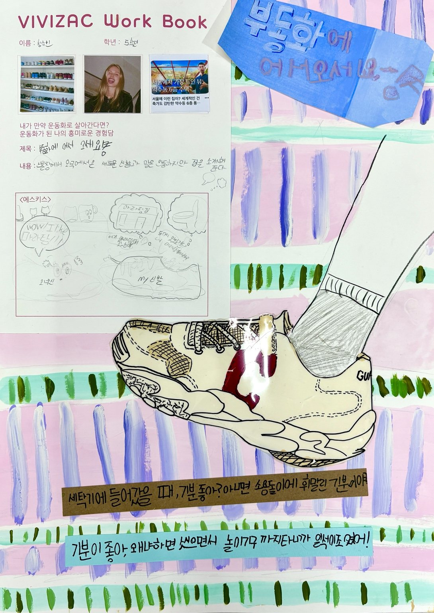

성향 관찰
아이의 말, 행동, 선택, 시도, 회복 과정을 수업 안에서 세심하게 봅니다.
비비작아이성향미술학원은 대구 달서구 대천동에 위치한 유치부·초등부 성향중심 아동미술학원입니다. 대천동, 유천동, 월성동, 진천동 인근에서 아이의 자존감과 창의력, 생각하는 힘, 문제 해결력을 키우는 미술교육을 진행합니다.

비비작은 아이의 그림 결과물만 평가하지 않습니다. 수업 중 아이가 어떤 생각을 하는지, 어떤 방식으로 표현하는지, 어려운 순간에 어떻게 다시 시도하는지를 관찰합니다.
조심스럽게 시작하는 아이, 자기 생각은 많지만 표현을 어려워하는 아이, 완벽하게 하고 싶어 지우기를 반복하는 아이. 비비작은 아이의 성향을 이해하는 것에서 아동미술교육을 시작합니다.
아이의 말, 행동, 선택, 시도, 회복 과정을 수업 안에서 세심하게 봅니다.
실패를 부정하지 않고 다시 시도할 수 있는 안전한 미술 경험을 만듭니다.

비비작은 대천동, 유천동, 월성동, 진천동 인근 유치부와 초등부 아이들을 대상으로 자존감과 창의력, 생각하는 힘을 키우는 아동미술교육을 진행합니다.

새로운 재료를 탐색하고, 자신의 생각을 안전하게 꺼내며, 작은 성공 경험을 쌓는 시간입니다.

관찰, 드로잉, 질문, 창의적 해석을 통해 자기 방식으로 문제를 해결하는 경험을 쌓습니다.

아이가 완성한 그림만 보면 성장의 방향을 놓치기 쉽습니다. 비비작은 아이가 어떤 생각으로 시작했는지, 어디서 망설였는지, 어떻게 다시 시도했는지를 관찰합니다.
그 과정 속에서 아이의 성향과 자신감, 앞으로 필요한 교육 방향이 보입니다.
우리 아이들은 앞으로 살아가면서 처음부터 잘되지 않는 일, 생각보다 오래 걸리는 일, 여러 번의 시행착오를 지나야만 해낼 수 있는 일을 반드시 만나게 됩니다.
그때 아이를 다시 움직이게 하는 힘은 단순한 지식이나 이해력만이 아닙니다. “처음엔 부족해도 계속하면 달라질 수 있다”는 믿음입니다.
비비작은 그 믿음이 계속되는 시도와 실패, 다시 해보는 경험 속에서 자란다고 생각합니다. 그래서 아이의 결과물보다, 그 결과에 이르기까지의 생각과 과정, 회복의 순간을 더 깊이 바라봅니다.
비비작의 목표는 아이가 그림 한 장을 잘 그리는 것에서 끝나지 않습니다.
아이가 스스로 생각하고, 자기 생각을 표현하며, 다양한 문제를 자기 방식으로 해결해 가는 힘을 기르는 것이 비비작의 교육 목표입니다.수업 중 관찰한 아이의 말, 행동, 선택, 시도, 회복 과정은 학부모 상담과 피드백에 활용됩니다. 부모님께는 아이의 현재 모습과 앞으로 필요한 교육 방향을 구체적으로 안내합니다.
아이의 태도와 표현 방식, 어려운 순간의 반응을 살펴봅니다.
하루의 결과가 아니라 시간이 지나며 달라지는 아이의 모습을 봅니다.
관찰된 내용을 바탕으로 학부모님께 변화와 지도 방향을 안내합니다.
비비작은 아이의 결과물만이 아니라 수업 중 보이는 생각, 시도, 회복의 과정을 부모님께 전하고 있습니다. 실제 학부모님들이 남겨주신 리뷰와 상담 대화를 바탕으로 개인정보가 드러나지 않도록 일부 문장을 정리했습니다.
“결과물 완성만 강조하기보다 아이가 자기 생각을 표현하게 해주는 분위기라 만족합니다. 아이에게 맞게 설명해주시고 부모 피드백도 꼼꼼한 편이에요.”
“수업 중 사진과 장문의 카톡 피드백을 읽으면 우리 아이를 잘 알고 애정 있게 봐주신다는 게 느껴져 감사했어요. 아이가 스스로 그리는 힘을 기르고 싶다면 추천합니다.”
“상담도 수업도 아이의 성향에 맞춰 해주시니 아이를 파악하는 데 참고가 됩니다. 선생님과 원장님이 진심으로 다가와 주셔서 아이도 좋아합니다.”
“3년째 다니고 있어요. 아이가 오래 다닐 수 있는 건 선생님 덕분인 것 같아요. 다정하고 아이들 눈높이에 맞춰 주셔서 포근한 미술 놀이터 같은 느낌입니다.”
“미술학원 가기 싫어하던 아이였는데 특강을 듣고 계속 즐겁게 다니고 있어요. 수업도 알차고 이제는 아이가 미술하는 걸 즐거워합니다.”
“학원이 체계적이고 선생님들이 친절하세요. 수업도 알차고 아이도 재미있어해서 꾸준히 다닐 생각입니다.”
위 후기는 네이버 리뷰와 당근 후기 내용을 바탕으로, 개인정보와 특정 아동 정보가 드러나지 않도록 홈페이지 문맥에 맞게 일부 문장을 정리한 내용입니다.
비비작아이성향미술학원은 대구 달서구 대천동에 위치해 있으며, 유천동과 월성동 인근에서도 아이의 성향과 자존감, 창의력을 함께 키우는 미술교육을 찾는 부모님들이 상담을 문의하고 있습니다.
유천동에서 미술학원을 찾는 부모님이라면, 단순히 가까운 거리만이 아니라 아이에게 어떤 미술 경험이 필요한지도 함께 살펴보게 됩니다. 비비작은 유천동 인근에서 다니기 좋은 성향중심 아동미술학원으로, 아이의 말과 행동, 선택과 시도, 회복 과정을 관찰하며 자존감과 생각하는 힘을 키우는 수업을 진행합니다.
월성동에서 유치부·초등부 미술학원을 알아보는 부모님께도 비비작은 결과물 중심이 아닌 과정중심 미술교육을 제안합니다. 아이가 스스로 생각하고 표현하며, 어려운 순간에도 다시 시도할 수 있도록 성향에 맞춰 지도합니다.
비비작은 픽업 차량을 운행하지 않습니다. 그럼에도 유천동과 월성동 등 인근 지역의 많은 부모님들이 직접 아이를 데려다주며 비비작 수업을 선택하고 있습니다. 아이의 성향을 이해하고, 자존감과 창의력이 자라는 과정을 중요하게 생각하는 부모님들께 비비작은 보내고 싶은 학원으로 자리 잡아가고 있습니다.
비비작은 작품의 완성도만이 아니라, 아이가 생각을 펼치고 자기 방식으로 표현해 가는 과정을 중요하게 봅니다.



대천동, 유천동, 월성동, 진천동 인근에서 유치부·초등부 미술학원을 찾는 부모님들이 궁금해하시는 내용을 정리했습니다.
비비작아이성향미술학원은 대구 달서구 대천동에 위치한 유치부·초등부 성향중심 아동미술학원입니다. 아이의 그림 결과물만 평가하지 않고, 아이의 성향과 표현 방식, 자신감, 생각하는 태도, 문제 해결 과정을 함께 관찰하고 지도합니다.
네. 비비작은 유천동 인근 대천동에 위치해 있으며, 유천동에서 미술학원을 찾는 부모님들도 상담을 문의하고 있습니다. 비비작은 유천동 인근에서 다니기 좋은 성향중심 아동미술학원으로, 아이의 자존감과 창의력, 생각하는 힘을 키우는 수업을 진행합니다.
네. 월성동 인근에서도 비비작 수업을 선택하는 부모님들이 있습니다. 차량 운행은 없지만, 아이의 성향을 이해하고 과정 중심으로 지도하는 미술교육을 중요하게 생각하는 부모님들이 직접 아이를 데려다주며 비비작을 선택하고 있습니다.
비비작은 그림을 잘 그리는 결과보다 아이의 자신감, 표현 과정, 생각하는 힘, 다시 시도하는 태도를 함께 키우고 싶은 아이에게 잘 맞습니다. 미술을 어려워하거나, 자기 생각을 표현하는 데 시간이 필요한 아이에게도 성향에 맞춘 지도를 제공합니다.
비비작은 예쁜 결과물을 만드는 것만 목표로 하지 않습니다. 아이가 어떤 생각으로 시작했는지, 어디서 망설였는지, 어떻게 다시 시도했는지를 관찰합니다. 그 과정 속에서 아이의 성향과 자신감, 앞으로 필요한 교육 방향을 함께 찾아갑니다.
비비작은 수업 중 아이의 말, 행동, 선택, 시도, 회복 과정을 관찰하고 기록합니다. 이 관찰 내용을 바탕으로 학부모님께 아이의 현재 모습과 변화 과정, 앞으로 필요한 교육 방향을 구체적으로 안내합니다.
비비작은 토요일반 초등부 정규수업을 운영하고 있으며, 유치부 토요일반도 오픈을 준비하고 있습니다. 토요일반 수업 시간은 오전 10시 정규반과 오전 11시 정규반입니다.
대천동, 유천동, 월성동, 진천동 인근에서 유치부·초등부 성향중심 아동미술학원을 찾고 계신다면 비비작에서 아이의 생각이 자라는 수업을 경험해보세요.